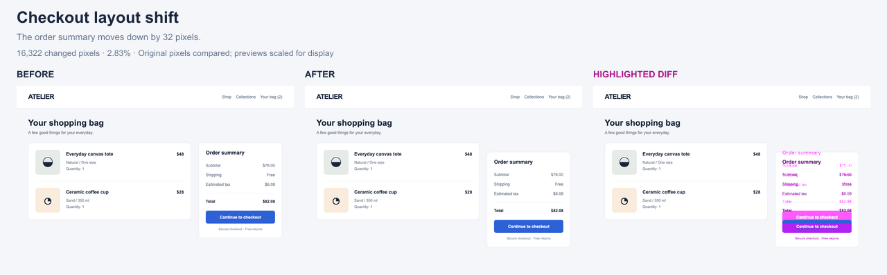
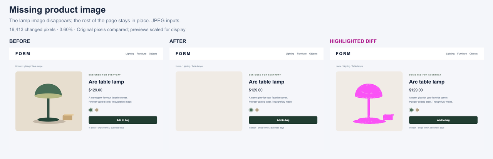
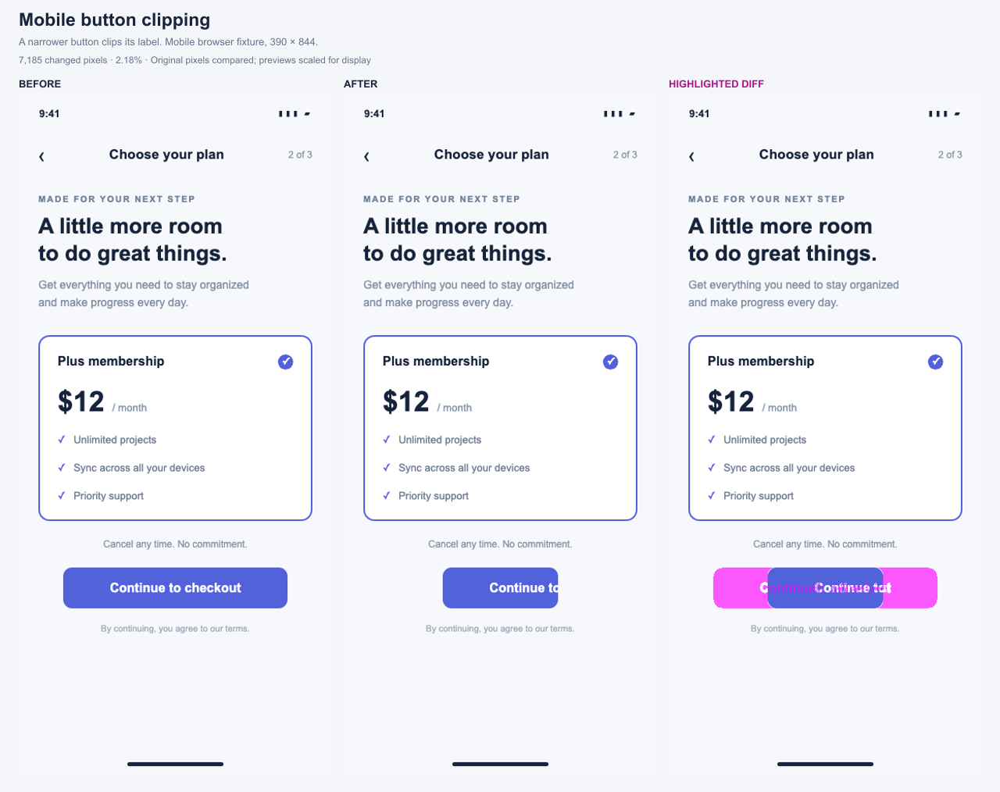
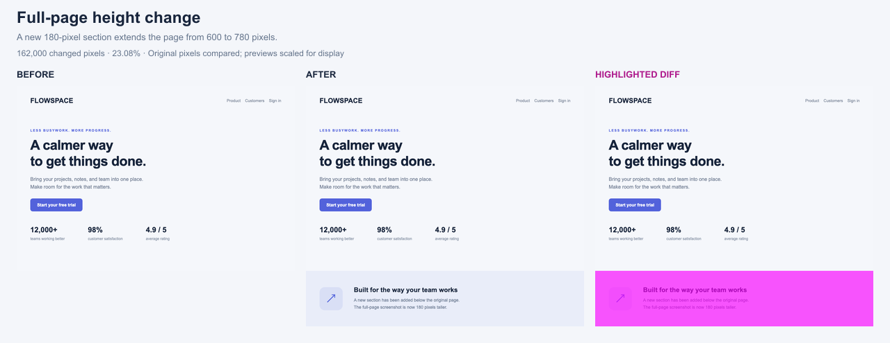

Controlled HTML fixtures captured in Chromium 151.0.7922.34. The mobile example is a browser viewport fixture, not a React Native capture. Magenta marks changed pixels. Click an image to enlarge it.
The order summary moves down by 32 pixels.

Full-size before · Full-size after · Full-size highlighted diff
The lamp image disappears; the rest of the page stays in place. JPEG inputs.

Full-size before · Full-size after · Full-size highlighted diff
A narrower button clips its label. Mobile browser fixture, 390 × 844.

Full-size before · Full-size after · Full-size highlighted diff
A new 180-pixel section extends the page from 600 to 780 pixels.

Full-size before · Full-size after · Full-size highlighted diff
Additional controls passed: identical screenshots produced zero changes; reversing the page-height case highlighted the removed section.